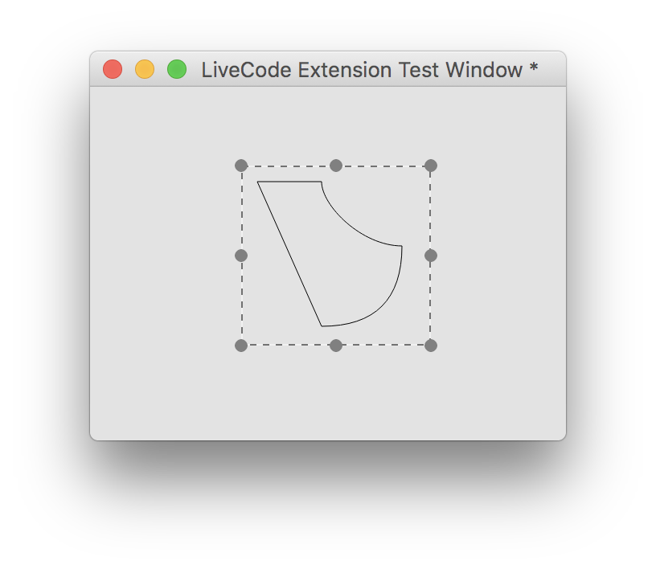

LiveCode has a simple way to extend the functionality or control set of your app using separately compiled modules. This guide will take you through the process of installing and using these new widgets and libraries and for the adventurous among you, provide a guide to building and sharing your own extensions.
To make it possible to create extensions and plug them into the LiveCode engine we've created a new flavor of our language called LiveCode Builder. LiveCode Builder looks a lot like LiveCode Script so should feel familiar for any seasoned LiveCode developer. There is lots of new syntax which exposes parts of the LiveCode engine that were only previously available to those who were skilled c/c++ developers.
To learn more about LiveCode Builder and creating extensions, read on.
Warning: It is important to stress right at the start that no aspect of LiveCode Builder should be considered final. Every piece of syntax in LiveCode Builder is subject to change.
The IDE provides an "Extension Builder" tool to help make development and packaging of extensions as easy as possible.
Note: LiveCode Builder is a different flavor of LiveCode so it is not possible to edit LiveCode Builder scripts in the main LiveCode Script IDE.
Open the "Extension Builder" from the tools menu:
Tools > Extension Builder
Note: A great way to get started is to tweak the script of one of our widget examples.
Using the selection dropdown (1), you can select the extension you wish to develop or click the "open" icon in the header back to locate an extension you've not loaded before.
The main difference between widgets and libraries is that a widget draws to a pre-existing canvas. Apart from that, the authoring process is much the same for both extension types.
We recommend using the Atom text editor, available at https://atom.io/. A LiveCode package is available which provides some colorization as well as indentation. If you prefer to use TextWrangler, there is a colorizing script here. It should be placed in /Application Support/TextWrangler/Language Modules/
Start by creating a plain text file in a new directory and save it to disk with the extension "lcb":
/Desktop/widgettest/main.lcb
Note: The extension builder currently relies on there being only one main module file in a given directory.
Start by declaring the type of extension, either "widget" or "library" followed by your identifier (See "Select A Developer ID" below).
widget community.livecode.beaumont.pinkCircle
## Code for your widget
end widget
This is the unique identifier by which your extension will be referred to by the LiveCode Engine.
Note: All LiveCode authored widgets are in the application package at /Tools/Extensions/. To play with one of these extensions we recommend copying the folder from the application package to your desktop and loading it from there. Changing the extension identifier in the source code will ensure it doesn't conflict with the existing extension.
Next, provide metadata to help LiveCode display your widget correctly in the IDE and in the online portal.
widget community.livecode.beaumont.pinkCircle
metadata title is "My Pink Circle"
metadata author is "Benjamin Beaumont"
metadata version is "1.0.0"
end widget
The LiveCode builder syntax is broken down into modules. There are 3 classes of module:
| Type | Description |
|---|---|
| Default | These modules are part of LiveCode builder and are included by default. Their syntax is always available to you as a LiveCode developer. |
| Optional | These modules are created and distributed by LiveCode Ltd and must be imported by the extension developer in order to make use of their syntax. |
| Custom | These modules are created and distributed through the online portal and must be imported by the extension developer in order to make use of their syntax. |
LiveCode builder contains the following modules:
| Module | Type | Description |
|---|---|---|
| com.livecode.canvas | Optional | Provides the syntax and types for 2D drawing allowing developers to draw to a canvas. Required if creating a widget. |
| com.livecode.widget | Optional | Contains syntax specific to widget building such as "my width" and "the mouse position". |
| com.livecode.engine | Optional | Contains syntax for all extension building such as "dispatch" and "log". |
| com.livecode.arithmetic | Default | Contains syntax for basic mathematical operations. |
| com.livecode.array | Default | Contains syntax for operations on arrays. |
| com.livecode.assert | Default | Contains syntax for making assertions about program state. |
| com.livecode.binary | Default | Contains syntax for operations on binary data. |
| com.livecode.bitwise | Default | Contains syntax for bitwise logical operators. |
| com.livecode.byte | Default | Contains syntax for operations on byte chunks. |
| com.livecode.char | Default | Contains syntax for operations on char chunks. |
| com.livecode.codeunit | Default | Contains syntax for operations on codeunit chunks. |
| com.livecode.date | Default | Contains syntax for accessing the date and time. |
| com.livecode.file | Default | Contains syntax for file I/O operations. |
| com.livecode.foreign | Default | Provides the type bindings for foreign types. |
| com.livecode.java | Default | Provides helper functions and types for interfacing with Java. |
| com.livecode.list | Default | Contains syntax for operations on lists. |
| com.livecode.logic | Default | Contains syntax for logical operators. |
| com.livecode.math | Default | Contains syntax for mathematical operations. |
| com.livecode.mathfoundation | Default | Contains syntax for foundational mathematical operations. |
| com.livecode.objc | Default | Provides helper functions and types for interfacing with Objective-C. |
| com.livecode.sort | Default | Contains syntax for sorting operations. |
| com.livecode.stream | Default | Contains syntax for stream I/O operations. |
| com.livecode.string | Default | Contains syntax for operations on strings. |
| com.livecode.system | Default | Contains syntax for accessing system information. |
| com.livecode.type | Default | Contains syntax for general operations on types. |
| com.livecode.typeconvert | Default | Contains syntax for conversions between types. |
| com.livecode.unittest | Default | Contains syntax for unit testing LiveCode Builder programs. |
Warning! Module names are subject to change.
The LiveCode dictionary has a full list of all available syntax as well as the module each belongs to. As a general rule we recommend importing all three optional modules whenever developing widgets.
widget community.livecode.beaumont.pinkCircle
use com.livecode.canvas
use com.livecode.widget
use com.livecode.engine
metadata title is "My Pink Circle"
metadata author is "Benjamin Beaumont"
metadata version is "1.0.0"
end widget
There are several core handlers that any widget developer should implement:
| Handler | Description |
|---|---|
| OnPaint | The OnPaint message is sent to your widget whenever LiveCode requires it to redraw. The performance of your widget is tied primarily to this handler and should be kept as efficient as possible. |
| OnCreate | The OnCreate message is sent to your widget when it is first created by LiveCode. This can be used to initialise default data and where applicable, reduce the burden for calculating constants etc in the onPaint handler. |
| OnGeometryChanged | The OnGeometryChanged message is sent when the control is changed in size. |
| OnSave | The OnSave message is sent when your widget is about to be destroyed and enables the widget to save data set on the widget. |
| OnLoad | The OnLoad message is sent when your widget is created and enables the widget to retrieve data saved on the widget. |
In the first instance we are going to create a widget with no settable
properties, just using the OnPaint handler.
widget community.livecode.beaumont.pinkCircle
metadata title is "My Pink Circle"
metadata author is "Benjamin Beaumont"
metadata version is "1.0.0"
public handler OnPaint()
// Draw widget
end handler
end widget
widget community.livecode.beaumont.pinkCircle
metadata title is "My Pink Circle"
metadata author is "Benjamin Beaumont"
metadata version is "1.0.0"
use com.livecode.canvas
public handler OnPaint()
// Create a path with a radius of half the width of the canvas
variable tCirclePath as Path
put circle path centered at point [my width / 2, my height / 2] with radius (my width/2) into tCirclePath
// Set the paint that will be used to fill the circle to a solid
// pink color
set the paint of this canvas to solid paint with color [1, 0, 1]
// Fill the path
fill tCirclePath on this canvas
end handler
end widget
Now open the extension builder stack as shown above and click on the folder icon at the top right to load your .lcb file into the builder.
Click test. Your widget should be displayed on the new stack. If you can't see it, check behind the extension stack.
In order to make a widget useful to end users it is likely that you'll want to expose properties that allow them to specify how your widget should behave.
To specify a property you must provide a name and the method to get and set the property.
property <name> get <variable/handler> set <variable/handler>
The simplest properties to get/set are numbers or strings. So lets
create a circleMargin property that allows users to define a margin.
property circleMargin get mMargin set setMargin
In the above example, when the circleMargin property is requested,
the variable mMargin is returned; when the property is set, the
handler setMargin is called. To have a property linked directly to
the value of a variable, simply provide the variable name. There will be
no other side effects - notably, a redraw will not automatically be
triggered in the case that a variable name is used for a setter. To
process the value coming from and going into LiveCode Script, or to add
side-effects when getting and setting properties, provide handler names.
In our case we're defining a setter for the circleMargin property
because we need to trigger a redraw when it is set.
private variable mMargin as Real
We'll define a member variable to store the value for the margin. LiveCode Builder is typed so you must also specify the type of your variable. Remember, the canvas you are drawing to has subpixel precision so our margin is a real number rather than an integer. For a full list of types available in LiveCode Builder please see the Typing section of the language specification guide.
We also suggest a naming convention for variables in the section on variable and case sensitivity.
Finally we have to implement our setMargin handler.
public handler setMargin(in pMargin as Real) returns nothing
put pMargin into mMargin
redraw all
end handler
Implementing the "setter" ourselves provides us with a little more flexibility. In this case when the property is set we want our pink circle to immediately redraw to reflect the property change. We do this by calling "redraw all".
To test the property click "test" and from the message box set the property.
set the cicleMargin of widget 1 to 15
Full Example
widget community.livecode.beaumont.pinkCircle
metadata title is "My Pink Circle"
metadata author is "Benjamin Beaumont"
metadata version is "1.0.0"
use com.livecode.canvas
use com.livecode.widget
use com.livecode.engine
// Properties
property circleMargin get mMargin set setMargin
// Local variables
private variable mMargin as Real
public handler onCreate()
put 0 into mMargin
end handler
public handler OnPaint()
// Create a path with a radius of half the width of the canvas
variable tCirclePath as Path
put circle path centered at point [my width / 2, my height / 2] with radius (my width/2) into tCirclePath
// Set the paint that will be used to fill the circle to a solid
// pink color
set the paint of this canvas to solid paint with color [1, 0, 1]
// Fill the path
fill tCirclePath on this canvas
end handler
public handler setMargin(in pMargin as Real)
put pMargin into mMargin
redraw all
end handler
end widget
When a stack containing a widget is saved, the widget's OnSave handler is called by the engine. The OnSave handler has an array out parameter - you can fill this array with whatever widget data is needed to reconstruct the widget. LiveCode saves this data along with instances of the widget in the stack file.
public handler OnSave(out rProperties as Array)
put the empty array into rProperties
put mMargin into rProperties["margin"]
return rProperties
end handler
This same array is passed as a parameter to an OnLoad handler which is called when the stack the widget is on is loaded.
public handler OnLoad(in pProperties as Array)
put pProperties["margin"] into mMargin
end handler
Clicking on the "test" button causes the extension builder to compile your source code file (***.lcb***) and produce a compiled module file (***.lcm***). If an error is encountered it is output in the "console" section of the builder:
Error: <source path>: <line number>: <char number>: <error message>
To start creating more complex widgets see the LiveCode Builder api in the documentation stack in the IDE.
A extension library is written in much the same way as the above widget. The only difference is that all the public handlers implemented are inserted into the message path when the extension is loaded.
For example, here is a simple library with one handler which simply returns the string "Hello World!":
library community.livecode.elanorb.helloworld
metadata title is "Hello World Library"
metadata author is "Elanor Buchanan"
metadata version is "1.0.0"
public handler sayHello()
return "Hello World!"
end handler
end library
Once this is compiled and loaded, the sayHello handler would be in the message path, before the backscripts. LiveCode Builder library handlers can be invoked in both command and function form:
sayHello
put the result -- outputs "Hello World!"
put sayHello() -- outputs "Hello World!"
To load a compiled module file call:
load extension <filepath.lcm>
To create a widget from script call:
create widget <name> as <identifier>
e.g.
create widget "myWidget" as "com.livecode.extensions.waddingham.clock"
See the online extensions course for a thorough introduction to LiveCode Builder, complete with examples. The following extension examples are worked through: * Hello World library * Extended Hello World library * Rotated Text widget * Extended Rotated Text widget * Pie Chart widget * Modifying the Line Graph widget
If you are drawing to the widget canvas in the OnPaint handler (as
opposed to wrapping native views) it
is a good idea to familiarise yourself with the canvas API. It provides
a set of operations for creating, measuring, transforming and drawing
paths and text.
Paths corresponding to standard shapes can be created using the various path 'constructors':
line path from mFrom to mTorectangle path of mRectcircle path centered at mCenter with radius mRadiusellipse path centered at mPoint with radii mRadiirounded rectangle path of mRect with (radius mRadius | radii mRadii )arc path centered at mCenter with [ radius mRadius | radii mRadii ] from mStartAngle to mEndAnglesector path centered at mCenter with [ radius mRadius | radii mRadii ] from mStartAngle to mEndAnglesegment path centered at mCenter with [ radius mRadius | radii mRadii ] from mStartAngle to mEndAngle( polygon | polyline ) path with points mPointsTo create a path using the path operations, start with an empty path object:
// Create a new empty path
variable tPath as Path
put the empty path into tPath
Then use the canvas path syntax to build the path. Simple paths with no subpaths (i.e. ones you can draw without lifting the pencil), can be created using the following operations:
line to mPoint on mPatharc through mThrough to mTo with radius mRadius on mPathcurve through mThroughA [ then mThroughB ] to mTo on mPatharc to mEnd with radii mRadii rotated by mAngle [ taking ( largest | smallest ) ( clockwise | anticlockwise ) route ] on mPathclose path on mPathPaths made up of disjoint subpaths (i.e. ones you need to lift the pencil for) can be created using the move operation:
move to mPoint on mPathFor example, to create a path consisting of a pair of parallel lines:
public handler OnPaint()
// Create a new empty path
variable tPath as Path
put the empty path into tPath
// Begin a new subpath of tPath
move to point [50, 50] on tPath
// Add a line to tPath
line to point [100, 50] on tPath
// Begin a new subpath of tPath
move to point [50, 100] on tPath
// Add a line to tPath
line to point [100, 100] on tPath
stroke tPath on this canvas
end handler
The following example illustrates how the parameters to elliptic arcs work. Take the ellipse with horizontal radius 50 and vertical radius 25. The red and green arcs start from the same point; the red is the smallest clockwise route to a given point, the green is the largest anticlockwise route. Together they make up the whole ellipse:
public handler OnPaint()
variable tSmallest as Path
put the empty path into tSmallest
// Start at [50, 50]
move to point [50, 50] on tSmallest
// Continue path with an arc to 100, 25
arc to point [100, 25] with radii [50, 25] rotated by 0 taking smallest clockwise route on tSmallest
variable tLargest as Path
put the empty path into tLargest
// Start at [50, 50]
move to point [50, 50] on tLargest
// Continue path with an arc to 100, 25
arc to point [100, 25] with radii [50, 25] rotated by 0 taking largest anticlockwise route on tLargest
set the paint of this canvas to solid paint with color [255,0,0]
stroke tSmallest on this canvas
set the paint of this canvas to solid paint with color [0,255,0]
stroke tLargest on this canvas
end handler
Paths may also be created using SVG instructions, for example:
public handler OnPaint()
variable tPath as Path
put path "M10,10 L50,100 Q100,100 100,50 C75,50 50,25 50,10z" into tPath
stroke tPath on this canvas
end handler
Produces the following:

There is essentially only one piece of syntax for rendering text:
fill text mText at (mPoint | mAlignment of mRect) on mCanvas
for example, a widget that simply displays its name at its center would
have the following OnPaint handler:
public handler OnPaint()
fill text my name at center of my bounds on this canvas
end handler
Text can be measured using the
measure mText on mCanvas
syntax. This can be used for example to do text wrapping, by calculating the widths of successive chunks of text and inserting line breaks where appropriate.
Both Path objects and canvases can be transformed using the standard affine transforms - either using the specific translate, rotate or scale syntax, or arbitrary transform matrices.
Widgets can either be 'host' widgets, as in the previous example, created when a widget is directly embedded in a stack, or 'child' widgets which are created when a widget is used as a child widget within another widget. The syntax for composed widgets is included in the com.livecode.widget module.
This composed widget example composes the clock widget and the selector widget, to create a version of the clock widget with adjustable time zone. The label at the top of the widget reflects which portion of the widget the mouse is over.
widget com.livecode.extensions.example.simplecomposed
use com.livecode.canvas
use com.livecode.widget
metadata title is "Simple Composed Widget"
metadata author is "LiveCode"
metadata version is "1.0.0"
private variable mInsideChild as String
private variable mInside as Boolean
private variable mSelector as Widget
private variable mClock as Widget
public handler OnCreate()
put false into mInside
put the empty string into mInsideChild
put a new widget "com.livecode.extensions.livecode.selector" into mSelector
set property "numSelections" of mSelector to 6
set annotation "Name" of mSelector to "Selector"
put a new widget "com.livecode.extensions.livecode.clock" into mClock
set annotation "Name" of mClock to "Clock"
place mSelector
place mClock
end handler
end widget
Notice that Widget is a variable type. This widget stores references to
its child widgets in private variables. In the OnCreate handler, the
widget objects are created, stored in the private variables and
'placed'. Child widgets can be stored as variables and
manipulated without actually being drawn to a canvas if they are
unplaced.
Properties implemented by child widgets can be got and set using the
property <propName> of <child widget> syntax.
Placing a widget ensures that they are drawn, in placement order.
Setting an annotation of a child widget assigns it a tag so that when an
unknown child widget is returned by an operator, its annotation can be
used to identify it.
public handler OnMouseEnter()
put true into mInside
if the target is not nothing then
put annotation "Name" of the target into mInsideChild
end if
redraw all
end handler
public handler OnMouseLeave()
if the target is not nothing then
put the empty string into mInsideChild
end if
put false into mInside
redraw all
end handler
In the OnMouseEnter and OnMouseLeave handlers, the target is used
to obtain a reference to the child widget that triggered the
OnMouseEnter and OnMouseLeave events, and the previously assigned
annotation put into the mInsideChild variable, which in turn
is rendered to the canvas in the OnPaint handler.
public handler OnPaint()
set the paint of this canvas to solid paint with color [0.75, 0.75, 0.75]
fill rectangle path of my bounds on this canvas
if mInside then
set the paint of this canvas to solid paint with color [1.0, 0.0, 0.0]
set the stroke width of this canvas to 4.0
stroke rectangle path of my bounds on this canvas
end if
if mInsideChild is not the empty string then
set the paint of this canvas to solid paint with color [0.0, 0.0, 0.0]
fill text mInsideChild at top of my bounds on this canvas
end if
end handler
The rectangle of each child widget is controlled using the following syntax:
* the rectangle of <widget> - Enables manipulation of the rectangle property of a child widget.
* the width of <widget> - Enables manipulation of the width property of a child widget.
* the height of <widget> - Enables manipulation of the height property of a child widget.
* the location of <widget> - Enables manipulation of the location property of a child widget.
public handler OnGeometryChanged()
set the rectangle of mSelector to rectangle [ 0, 20, my width, 50 ]
set the rectangle of mClock to rectangle [ 0, 50, my width, my height ]
end handler
Finally, messages posted by child widgets can be handled in the direct parent by handling the appropriate message (prepending 'On'). For example, the selector widget posts optionChanged when one of its numbers is selected. This is handled by this composed widget example in an OnOptionChanged handler.
public handler OnOptionChanged(in pIndex)
set property "timeZone" of mClock to pIndex - 1
end handler
One of the most powerful features of LiveCode Builder is the foreign function interface (FFI). It can be used to access native APIs on all supported platforms.
The fundamental concept involved in using the FFI is the foreign handler binding. This is a string containing information about the native functionality that is being bound to.
The format of the binding string varies slightly depending on the language of the foreign handler - for a complete specification, see the LiveCode Builder Language Reference.
In order to bind to C functions from a dynamic library, there is one essential thing to know: the signature of the function.
Note: On Windows, it is also necessary to find out the calling convention of the function. In the majority of cases if binding to functions in the Windows API, the calling convention will be
stdcall.
The declared types of the foreign handler must match the signature, so
that the FFI call can be computed correctly. For example, to bind to the
atof C standard library function that converts a C-string to a double,
double atof(const char *str)
We could use:
foreign handler C_AToF(in pString as ZStringNative) returns CDouble \
binds to "atof"
See the Language Reference for more information on C binding strings.
When used in the context of a foreign handler definition, a foreign handler type will cause automatic bridging of the LCB handler to a C function pointer which can be called directly by the native code.
The function pointers created in this fashion have lifetime equivalent to that of the calling context. In particular, for widgets they will last as long as the widget does, for all other module types they will last as long as the module is loaded.
For example, suppose you have the following function in myLib:
void qsort(void base, size_t nitems, size_t size, int (*compar)(const void *, const void))
void c_function_with_callback(void* p_context, bool(*func)(void* p_context))
This can be bound to using the following:
public foreign handler type CallbackType(in pContext as Pointer) returns CBool
foreign handler CFunctionWithCallback(in pContext as Pointer, in pHandler as CallbackType) returns nothing \
binds to "myLib>c_function_with_callback"
handler MyCallback(in pContext as Pointer) returns CBool
...
return true
end handler
handler CallCFunctionWithCallback(in pContext as Pointer)
CFunctionWithCallback(pContext, MyCallback)
end handler
Extensions can include compiled libraries on which they depend. The libraries must be compiled for each platform and architecture they are required on and placed folders named with a platform ID in the extension code folder. The platform ID folder names are in the form:
<architecture>-<platform>[-<options>]
See the platform ID specification for more details.
On all platforms with the exception of iOS, only dynamically linked libraries are supported.
On iOS 8+ dynamically linked frameworks (.framework) are supported and on all versions of iOS statically linked frameworks and libraries (.a) are supported. Static linking is not yet supported in iOS simulator builds.
If the iOS library requires linker dependencies a text file (.txt) may be included to list them in the form:
{library | [weak-]framework} <name>
Additionally, on iOS the .lcext extension is used to identify code
resources that conform to the exported symbols and sectors of externals.
Specifically they have a __deps sector that contains the content of
the dependencies file mentioned above and they export a LibInfo struct
named __libinfoptr_<libraryname>. Examples of generating .lcext files
are available in the LiveCode source repository. This is a more
efficient means of inclusion as it allows the compiler to strip unused
symbols.
Java bindings are currently supported on Android, Mac and Linux. On
desktop platforms the IDE will attempt to find the correct setting for
the JAVA_HOME environment variable. As this can vary from distro to
distro on Linux, this may fail - in this case ensure you set JAVA_HOME
in script or using the message box.
On any of the supported platforms, it is possible to bind to methods and fields of classes in the Java Platform API.
For example, take the java.util.UUID class . Here is a simple library which uses this class to return a new pseudo-randomly generated UUID as a string:
// The following comment block forms the top-level documentation of
// this library
/**
This library allows the creation of a UUID using the Java Platform
API.
*/
library com.livecode.library.javauuid
metadata title is "Java UUID"
metadata author is "LiveCode"
metadata version is "1.0.0"
// Bind to the static randomUUID() method of the java.util.UUID class
__safe foreign handler JNI_RandomUUID() returns JObject \
binds to "java:java.util.UUID>randomUUID()Ljava/util/UUID;!static"
// Bind to the toString() instance method of the java.util.UUID class
__safe foreign handler JNI_UUIDToString(in pUUID as JObject) returns JString \
binds to "java:java.util.UUID>toString()Ljava/lang/String;"
// Library public handler - this will be accessible from LiveCode
// when this library is loaded. The following comment block will
// be used to generate the documentation
/**
Returns a new random UUID.
Returns (String):
The string representation of a type 4 (pseudo randomly generated)
UUID.
*/
public handler GetRandomUUIDJava() returns String
// Call the static randomUUID method to return an instance of
// the UUID class
variable tUUID as JObject
put JNI_RandomUUID() into tUUID
// Call the toString method on the UUID instance to obtain the
// (java) string representation of the UUID
variable tUUIDString as JString
put JNI_UUIDToString(tUUID) into tUUIDString
// Convert to a LiveCode String and return
return StringFromJString(tUUIDString)
end handler
end library
Binding to a class constructor with no parameters:
__safe foreign handler CreateJavaObject() returns JObject binds to "java:java.lang.Object>new()"
Binding to a class constructor with parameters:
__safe foreign handler CreateJavaString(in pBytes as JByteArray) returns JString binds to "java:java.lang.String>new([B)"
Binding to a class instance method
__safe foreign handler JavaStringIsEmpty(in pString as JString) returns JBoolean binds to "java:java.lang.String>isEmpty()Z"
Binding to a class static method
__safe foreign handler CallJavaAdd(in pLeft as JInt, in pRight as JInt) returns JInt binds to "java:java.lang.Math>addExact(JJ)J!static"
Binding to a class field
__safe foreign handler JavaCalendarSetTime(in pCalendar as JObject, in pTime as JLong) returns nothing binds to "java:java.util.Calendar>set.time(J)" __safe foreign handler JavaCalendarGetTime(in pCalendar as JObject) returns JLong binds to "java:java.util.Calendar>get.time()J"
Binding to a class constant
__safe foreign handler GetJavaPi() returns JDouble binds to "java:java.lang.Math>get.PI()D!static"
On Android it is possible to access the standard platform APIs using Java FFI.
https://github.com/livecode/livecode/blob/develop/extensions/libraries/toast/toast.lcb
The standalone builder will look for .jar files in the code/jvm folder
of an extension package and load them automatically on startup of a
standalone. Due to the way things currently work, testing extensions
with jar files in the IDE is not supported. However it can be done by
setting the CLASSPATH environment variable before the Java Virtual
Machine is initialized. See Custom Java classes
for an example of how to do this.
For android, the possibilities for including third-party libraries
expands substantially. The code/jvm-android folder of an extension
package can contain .jar and .aar files, and obviously the .jar files
can make use of the Android API.
Classes in .jar files (either included directly, or within .aar packages) can be accessed using Java FFI in exactly the same way as classes in the Android API.
.aar packages can also contain resources and AndroidManifest.xml files - these are merged with the manifest and resources generated by LiveCode when building an Android application.
As .jar file code resources are supported, you can write and compile custom Java classes for use with an LCB extension.
Assuming the current folder is the root of an extension, consider the following java code, in a file java/com/livecode/library/helloworldjava/HelloWorld.java:
package com.livecode.library.helloworldjava;
public class HelloWorld
{
public static String sayHello()
{
return "Hello World!"
}
}
This can be compiled and packaged using java command-line tools:
javac java/com/livecode/library/helloworldjava/HelloWorld.java
jar cvf code/jvm/HelloWorld.jar -C java .
Now there should be a HelloWorld.jar file in the appropriate location relative to the extension.
In helloworld.lcb,
library com.livecode.library.helloworldjava
use com.livecode.foreign
use com.livecode.java
__safe foreign handler JNI_SayHello() returns JString \
binds to "java:com.livecode.library.helloworldjava.HelloWorld>sayHello()Ljava/lang/String;"
public handler SayHello() returns String
return StringFromJString(JNI_SayHello())
end handler
end library
A standalone including this extension would be able to execute the script
answer SayHello()
to pop up an answer dialog with the text "Hello World!". Obviously that is a rather circuitous route when you can already do
answer "Hello World!"
but it does open up a lot of possibilities for interoperation with Java libraries.
One such application would be the ability to record .wav files on Android. The MediaPlayer class does not come equipped with this functionality.
This can be compiled and packaged using java command-line tools, ensuring the appropriate android.jar is included in the dependencies (here we assume the location of the android toolchain is standard and the android-23 platform is downloaded):
javac -cp ~/android/toolchain/android-sdk/platforms/android-23/android.jar java/src/com/livecode/library/androidwavrecorder/ExtAudioRecorder.java
jar cvf code/jvm-android/AndroidWavRecorder.jar -C java/src .
Now there should be a AndroiWavRecorder.jar file in the appropriate location relative to the extension.
The types used in Objective-C foreign handler declarations are the usual
C types, plus a few special ones for handling Obj-C id objects. These
are:
ObjcId - an id with no implicit action on its reference countObjcRetainedId - an id which is expected to already have been retained. (i.e. the caller or callee expects to receive it with +1 ref count)ObjcAutoreleasedId - an id which has been placed in the innermost autorelease pool before being returned to the callerThe ObjcObject type is a wrapper round the raw ObjcId types, which
manages the lifetime of the obj-c object it contains. It should
generally be used when using obj-c objects within LCB.
Objective-C binding strings mirror as closely as possible the structure
of method declarations in Objective-C. For example, the class
NSSpeechSynthesizer has methods
- (id)initWithVoice:(NSString *)voice;
- (BOOL)startSpeakingString:(NSString *)string;
In order to create an instance of the class, we first use the superclass
NSObject's
+ (id)alloc;
method to allocate an instance, and then call initWithVoice: on it:
foreign handler Objc_NSSpeechSynthesizerAlloc() returns ObjcRetainedId \
binds to "objc:NSSpeechSynthesizer.+alloc"
The + indicates this is a class method, i.e. we don't require an
instance of the class to call the method.
foreign handler Objc_NSSpeechSynthesizerInitWithVoice(in pSynthesizer as ObjcId, in pVoice as optional ObjcId) returns ObjcId \
binds to "objc:NSSpeechSynthesizer.-initWithVoice:"
The - here indicates this is an instance method, i.e. we require an
instance of the class to call the method. This is always the first
parameter. We can then create and initialize an NSSpeechSynthesizer
using the following. We pass nothing to initWithVoice: to use the
default voice.
handler CreateSpeechSynthesizer() returns ObjcObject
variable tSynthesizer as ObjcObject
put Objc_NSSpeechSynthesizerAlloc() into tSynthesizer
return Objc_NSSpeechSynthesizerInitWithVoice(tSynthesizer, \
nothing)
end handler
To speak, we would bind to the startSpeakingString: method:
foreign handler Objc_NSSpeechSynthesizerStartSpeaking(in pSynthesizer as ObjcId, in pString as ObjcId) returns CBool \
binds to "objc:NSSpeechSynthesizer.-startSpeakingString:"
Then expose a public library handler to enable calls from LiveCode.
private variable mSynthesizer as optional ObjcObject
public handler SynthesizeSpeech(in pString as String) returns Boolean
if mSynthesizer is nothing then
put CreateSpeechSynthesizer() into mSynthesizer
end if
Objc_NSSpeechSynthesizerStartSpeaking(mSynthesizer, \
StringToNSString(pString))
end handler
Callbacks are usually handled by creating delegates. A class delegate handles the events associated with that class and marshalls the callback message.
Objective-C delegate objects with LCB implementations of protocol
methods can be created using the CreateObjcDelegate and
CreateObjcInformalDelegate handlers, provided by the com.livecode.objc
module.
In order to create a delegate to handle a particular protocol method,
pass in the protocol name as the first argument and the mapping from
method names to LCB handlers as the second argument. For example, to
create a selectionChanged message for an NSTextView, we need to create
a handler
private handler DidChangeSelection(in pNotification as ObjcObject) returns nothing
post "selectionChanged"
end handler
and create a NSTextViewDelegate:
variable tDelegate as optional ObjcObject
put CreateObjcDelegate( \
"NSTextViewDelegate", \
{"textViewDidChangeSelection:": DidChangeSelection}, \
) into tDelegate
if tDelegate is not nothing then
put tDelegate into mTextViewDelegate
end if
Optionally, a context parameter can be passed in at delegate creation time:
put CreateObjcDelegateWithContext( \
"NSTextViewDelegate", \
{"textViewDidChangeSelection:": DidChangeSelectionContext}, \
tContext) into tDelegate
if tDelegate is not nothing then
put tDelegate into mTextViewDelegate
end if
In this case the context variable will be passed as first argument of the corresponding LCB callback:
private handler DidChangeSelectionContext(in pContext, in pNotification as ObjcObject) returns nothing
post "selectionChanged" with [pContext]
end handler
Some protocols consist of purely optional methods. In this case the
information about the protocol's methods are not available from the
objective-c runtime API. For this eventuality there are also handlers
CreateObjcInformalDelegate and CreateObjcInformalDelegateWithContext.
These handlers take a list of foreign handlers as their first argument
instead of a protocol name. The foreign handlers' information is used to
resolve incoming selectors so that the desired LCB callback is called.
For example the NSSoundDelegate protocol has only one method, and it
is optional,
- (void)sound:(NSSound *)sound didFinishPlaying:(BOOL)aBool;
So in order to create an NSSoundDelegate, we need to create a list of
foreign handlers, in this case just the following:
foreign handler NSSoundDidFinishPlaying(in pSound as ObjcId, in pDidFinish as CSChar) binds to "objc:.-sound:didFinishPlaying:"
and create the informal delegate
handler DidSoundFinish(in pSound as ObjcId, in pDidFinish as Boolean) returns nothing
if pDidFinish then
post "soundFinished"
end if
end handler
foreign handler Objc_SetSoundDelegate(in pSound as ObjcId, in pDelegate as ObjcId) returns nothing \
binds to "objc:NSSound.-setDelegate:"
...
variable tDelegate as optional ObjcObject
put CreateObjcInformalDelegate( \
[NSSoundDidFinishPlaying], \
{"textViewDidChangeSelection:": DidChangeSelection}) \
into tDelegate
end if
if tDelegate is not nothing then
put tDelegate into mSoundDelegate
Objc_SetSoundDelegate(tSound, tDelegate)
end if
Note: Delegate properties are usually 'assigned' rather than 'retained', so it is necessary to store them in module variables until they are no longer needed. Generally the pattern required is as follows:
handler OnOpen()
-- Create native view and set native layer
-- Set native view delegate property
-- Store view and delegate in module vars
end handler
handler OnClose()
-- Set native view delegate property to nothing
-- Put nothing into view and delegate module vars
-- Set native layer to nothing
end handler
For our speech synthesizer example, suppose we want to post a message
when the speaking is finished. In NSSpeechSynthesizer.h, we can see the
definition of the NSSpeechSynthesizerDelegate:
@protocol NSSpeechSynthesizerDelegate <NSObject>
@optional
- (void)speechSynthesizer:(NSSpeechSynthesizer *)sender didFinishSpeaking:(BOOL)finishedSpeaking;
...
The first thing to note is that the protocol methods are all optional. This means that we have to use an informal delegate. To attach an LCB handler to the didFinishSpeaking event, we need to define both the foreign handler that binds to the protocol method and the LCB handler that should be called. Again this is an instance method of the delegate class, so the first parameter will be the delegate itself.
Again since the protocol method is optional, it will not be found if we
bind to
NSSpeechSynthesizerDelegate.-speechSynthesizer:didFinishSpeaking:, so
it is necessary to use dynamic binding for the foreign handler (i.e.
simply omitting the class in the binding string):
foreign handler Objc_SpeechSynthesizerDidFinishSpeaking(in pSynthesizerDelegate as ObjcId, in pSynthesizer as ObjcId, in pFinished as CBool) returns nothing \
binds to "objc:.-speechSynthesizer:didFinishSpeaking:"
handler OnDidFinishSpeaking(in pSynthesizerDelegate as ObjcId, in pSynthesizer as ObjcId, in pFinished as CBool) returns nothing
post "finishedSpeaking"
end handler
foreign handler Objc_SpeechSynthesizerSetDelegate(in pSynthesizer as ObjcId, in pDelegate as ObjcId) returns nothing \
binds to "objc:NSSpeechSynthesizer.-setDelegate:"
handler SetSpeechSynthesizerDelegate()
variable tDelegate as ObjcObject
put CreateObjcInformalDelegate( \
[Objc_SpeechSynthesizerDidFinishSpeaking], \
{ "speechSynthesizer:didFinishSpeaking:": \
OnDidFinishSpeaking }) into tDelegate
Objc_SpeechSynthesizerSetDelegate(mSynthesizer, tDelegate)
end handler
The key piece of syntax for creating widgets that hook into native view
objects is my native layer:
set my native layer to tView
The tView object is different on each platform, as is the method of
specifying LCB handlers for native view event callbacks. We will use the
example of a native button on each platform to illustrate this, where
possible.
The native layer should be created and destroyed every time the card
the widget is on is opened and closed respectively. Therefore the
pattern that should be adopted when writing a native widget is to use
the OnOpen and OnClose messages as follows:
private variable mNativeLayer as optional Pointer
handler OnOpen()
put CreateNativeLayer() into mNativeLayer
set my native layer to mNativeLayer
end handler
handler OnClose()
set my native layer to nothing
put nothing into mNativeLayer
end handler
When using a native layer, a widget's OnPaint handler is not called.
However it is recommended to provide some sort of placeholder OnPaint
method to represent the widget when the native layer is not supported
on the current platform.
Native views on Android are classes derived from android.view.View.
The Android button widget's native layer is an instance of the
android.widget.Button class:
? android.view.View
? android.widget.TextView
? android.widget.Button
The following snippet shows how to bind to the button constructor and set the native layer:
// Bind to Android engine methods in order to fetch the application
// Context
__safe foreign handler _JNI_GetAndroidEngine() returns JObject \
binds to "java:com.runrev.android.Engine>getEngine()Lcom/runrev/android/Engine;!static"
__safe foreign handler _JNI_GetEngineContext(in pEngine as JObject) returns JObject \
binds to "java:android.view.View>getContext()Landroid/content/Context;"
// Bind to the android.widget.Button constructor
__safe foreign handler _JNI_ButtonNew(in pContext as JObject) returns JObject \
binds to "java:android.widget.Button>new(Landroid/content/Context;)?ui"
// Store a reference to the native view
private variable mNativeView as optional JObject
handler CreateNativeLayer() returns Pointer
// Fetch the application Context
variable tContext as JObject
put _JNI_GetEngineContext(_JNI_GetAndroidEngine()) into tContext
// Create an instance of the android.widget.Button class
put _JNI_ButtonNew(tContext) into mNativeView
return PointerFromJObject(mNativeView)
end handler
handler SetNativeLayer()
set my native layer to CreateNativeLayer()
end handler
View objects on Android always require the application Context in their constructors.
View objects should always be created on the UI thread.
A button widget is obviously not complete without an action callback. We want a message to be received by the widget object in LiveCode whenever the native view is clicked.
On Android, the general procedure is to attach a Listener to an
object. In Java, Listeners are classes which implement a specified set
of callback methods defined in that listener's interface. The general
method of defining interface callbacks on Android
is used to create listeners with LCB handler callbacks.
The following snippet shows how to attach an OnClickListener to the
Button instance:
// Define handler type for button click callback. This matches
// the android.view.View.OnClickListener's
// abstract void onClick(View v)
// method.
handler type ClickCallback(in pView as JObject) returns nothing
// Bind to the interface proxy method. Since there is only one
// method to be implemented for the OnClickListener interface,
// we just pass in a handler of the appropriate type.
__safe foreign handler _JNI_OnClickListener(in pHandler as ClickCallback) returns JObject \
binds to "java:android.view.View$OnClickListener>interface()"
// Bind to the method used to set the OnClickListener on the
// Button object.
__safe foreign handler _JNI_SetOnClickListener(in pButton as JObject, in pListener as JObject) returns nothing \
binds to "java:android.view.View>setOnClickListener(Landroid/view/View$OnClickListener;)V?ui"
// Actual handler (of type ClickCallback) that will be called
// when the button is clicked
handler OnButtonClick(in pView as JObject) returns nothing
// The widget object in LiveCode will receive the posted message
post "mouseUp"
// Ensure the engine thread is notified of a pending event
MCEngineRunloopBreakWait()
end handler
// Store the OnClickListener object in a private variable
private variable mOnClickListener as optional JObject
// Set the OnClickListener
handler SetOnClickListener(in pButton as JObject) returns nothing
// Pass the OnButtonClick handler in the call to create a
// listener
put _JNI_OnClickListener(OnButtonClick) into mOnClickListener
// Set the OnClickListener on a Button instance
_JNI_SetOnClickListener(pButton, mOnClickListener)
end handler
Sometimes listener interfaces have multiple callback methods, for different events. In this case, you must pass an array mapping callback method names to handlers so that the correct handler is called for each event. This can also be done with single-method interfaces, and indeed is the recommended style to use as it will continue to work even if additional callback methods are added to the interface in subsequent API levels.
Switching to this style would require two small tweaks to the above code:
// Bind to the interface proxy method.
__safe foreign handler _JNI_OnClickListener(in pMapping as Array) returns JObject \
binds to "java:android.view.View$OnClickListener>interface()"
...
// Set the OnClickListener
handler SetOnClickListener(in pButtonView as JObject) returns nothing
// Map the OnButtonClick handler to the onClick method
put _JNI_OnClickListener({"onClick":OnButtonClick}) \
into mOnClickListener
// Set the OnClickListener on a Button instance
_JNI_SetOnClickListener(pButtonView, mOnClickListener)
end handler
Properties of Android native views can be set using methods of the view
(or one of its parent classes). For example, to hook up the enabled
property of the button, we bind to the setEnabled method of the parent
TextView class:
__safe foreign handler _JNI_SetTextViewEnabled(in pView as JObject, in pValue as JBoolean) returns nothing \
binds to "java:android.view.View>setEnabled(Z)V?ui"
handler SetEnabled(in pButtonView as Pointer)
_JNI_SetTextViewEnabled(pButtonView, my enabled)
end handler
Native views on iOS are classes derived from UIView. The iOS button
widget's native layer is an instance of the
UIButton class.
The following snippet shows how to bind to the button constructor and set the native layer:
// Define an alias for CULong
private type NSUInteger is CULong
// Bind to the UIButton class method buttonWithType:
private foreign handler ObjC_UIButtonButtonWithType(in pType as NSUInteger) returns ObjcId binds to "objc:UIButton.+buttonWithType:?ui"
// For a standard push button we need the type to be
// UIButtonTypeSystem, which is 1
constant UIButtonTypeSystem is 1
// Store a reference to the native view
private variable mNativeView as optional ObjcObject
unsafe handler CreateNativeLayer() returns Pointer
// Create an instance of the UIButton class
variable tButtonInstance as ObjcObject
put ObjC_UIButtonButtonWithType(UIButtonTypeSystem) \
into mNativeView
// Return the pointer
return PointerFromObjcObject(mNativeView)
end handler
handler SetNativeLayer()
set my native layer to CreateNativeLayer()
end handler
Views on iOS relay information about user interactions using either the target-action paradigm or delegation
In general, simple widgets will use the target-action paradigm. In
general, refer to the documentation for the particular class you are
wrapping. According to the UIButton API, in the
section 'Responding to Button Taps', the UIButton class uses the
target-action paradigm.
So, we can post a message to the widget script object in response to the click action as follows:
// Bind to the UIButton addTarget:action:forControlEvents: method
private foreign handler ObjC_UIButtonAddTargetActionForControlEvents(in pObj as ObjcId, in pTarget as ObjcId, in pAction as UIntPtr, in pControlEvents as NSUInteger) returns nothing binds to "objc:UIButton.-addTarget:action:forControlEvents:?ui"
// Actual handler that will be called when the button is clicked
handler OnButtonClick(in pSender as ObjcObject, in pContext as optional any) returns nothing
// The widget object in LiveCode will receive the posted message
post "mouseUp"
// Ensure the engine thread is notified of a pending event
MCEngineRunloopBreakWait()
end handler
// Store the action proxy object in a private variable
private variable mButtonProxy as optional ObjcObject
// The push button action type is UIControlEventTouchUpInside,
// which is 1 << 6. Constants cannot be evaluated expressions, so
// just define the bit shift
constant UIControlEventTouchUpInsideBit is 6
// Add the target action
unsafe handler AddTargetAction(in pButtonView as ObjcObject) returns nothing
// Create a proxy for the button object. This will receive the
// button events and call the provided callback handler
put ObjcProxyGetTarget(OnButtonClick, nothing) into mButtonProxy
// Add the target-action to the button view
ObjC_UIButtonAddTargetActionForControlEvents(pButtonView, \
mButtonProxy, ObjcProxyGetAction(), \
1 shifted left by UIControlEventTouchUpInsideBit bitwise)
end handler
More complex views on iOS require creation of delegates. For example,
there are several different user interactions possible with then
UITextField view. In order to handle these interactions, we create
a UITextFieldDelegate - see the API
for the list of events that can be handled.
In this example we hook up openField and textChanged messages:
// Bind to the text field's delegate property setter
private foriegn handler Objc_SetTextFieldDelegate(in pTextField as ObjcId, in pDelegate as ObjcId) returns nothing \
binds to "objc:UITextField.-setDelegate:?ui"
// Handler to be called when the field is opened
handler OnOpenField(in pField as ObjcId) returns nothing
// The widget object in LiveCode will receive the posted message
post "openField"
// Ensure the engine thread is notified of a pending event
MCEngineRunloopBreakWait()
end handler
// Define the NSRange type, one of the parameters in the
// textFieldShouldChangeCharactersInRange method
public foreign type NSRange binds to "MCAggregateTypeInfo:ff"
// Handler to be called when the field text is changed
handler OnTextChanged(in pField as ObjcId, in pRange as NSRange, in pReplacement as ObjcId) returns CBool
// The widget object in LiveCode will receive the posted message
post "textChanged"
// Ensure the engine thread is notified of a pending event
MCEngineRunloopBreakWait()
// Allow the text to be changed
return true
end handler
// Store the delegate in a private variable
private variable mTextFieldDelegate as optional ObjcObject
// Set the delegate
unsafe handler SetTextFieldDelegate(in pTextFieldView as ObjcObject) returns nothing
// Create a delegate mapping the textFieldDidBeginEditing:
// method to OnOpenField, and the
// textFieldShouldChangeCharactersInRange: method to
// OnTextChanged
// First define the mapping
variable tMapping as Array
put { "textFieldDidBeginEditing:": OnOpenField, \
"textField:shouldChangeCharactersInRange:replacementString:": \
OnTextChanged } into tMapping
put CreateObjcDelegate("UITextFieldDelegate", tMapping) \
into mTextFieldDelegate
Objc_TextFieldSetDelegate(pTextFieldView, mTextFieldDelegate)
end handler
Properties of iOS native views can be set using methods of the view (or one of its parent classes). For example, to hook up the enabled property:
foreign handler ObjC_UIButtonSetEnabled(in pObj as ObjcId, in pEnabled as CBool) returns nothing \
binds to "objc:UIButton.-setEnabled:?ui"
handler SetEnabled(in pButtonView as Pointer)
ObjC_UIButtonSetEnabled(pButtonView, my enabled)
end handler
Native views on Mac are classes derived from NSView. The Mac button
widget's native layer is an instance of the
NSButton class.
The following snippet shows how to bind to the button constructor and set the native layer:
// Define an alias for CULong
private type NSUInteger is CULong
// Bind to the NSButton class method to allocate a new NSButton
private foreign handler ObjC_NSButtonAlloc() returns ObjcRetainedId binds to "objc:NSButton.+alloc"
// Bind to the NSButton instance method to initialize an NSButton
private foreign handler ObjC_NSButtonInit(in pObj as ObjcId) returns ObjcId binds to "objc:NSButton.-init"
// Bind to NSButton instance methods setButtonType:, setBezelStyle:,
// and -setBordered:
private foreign handler ObjC_NSButtonSetButtonType(in pObj as ObjcId, in pStyle as NSUInteger) returns nothing binds to "objc:NSButton.-setButtonType:"
private foreign handler ObjC_NSButtonSetBezelStyle(in pObj as ObjcId, in pStyle as NSUInteger) returns nothing binds to "objc:NSButton.-setBezelStyle:"
private foreign handler ObjC_NSButtonSetBordered(in pObj as ObjcId, in pBordered as CBool) returns nothing binds to "objc:NSButton.-setBordered:"
// For a standard push button we need:
// buttonType to be NSMomentaryPushInButton = 7
// bezelStyle to be NSRoundedBezelStyle = 1
constant kNSMomentaryPushInButton is 7
constant kNSRoundedBezelStyle is 1
// Store a reference to the native view
private variable mNativeView as optional ObjcObject
unsafe handler CreateNativeLayer() returns Pointer
// Create an instance of the NSButton class
variable tButtonInstance as ObjcObject
put ObjC_NSButtonInit(ObjC_NSButtonAlloc()) into mNativeView
// Set the properties we need for a push button
ObjC_NSButtonSetButtonType(mNativeView, kNSMomentaryPushInButton)
ObjC_NSButtonSetBezelStyle(mNativeView, kNSRoundedBezelStyle)
ObjC_NSButtonSetBordered(mNativeView, true)
// Return the pointer
return PointerFromObjcObject(mNativeView)
end handler
handler SetNativeLayer()
set my native layer to CreateNativeLayer()
end handler
Views on Mac relay information about user interactions using either the target-action paradigm or delegation
In general, simple widgets will use the target-action paradigm. In
general, refer to the documentation for the particular class you are
wrapping. The NSButton uses the target-action paradigm.
So, we can post a message to the widget script object in response to the click action as follows:
private foreign handler ObjC_NSButtonSetTarget(in pObj as ObjcId, in pTarget as ObjcId) returns nothing binds to "objc:NSButton.-setTarget:"
private foreign handler ObjC_NSButtonSetAction(in pObj as ObjcId, in pAction as UIntPtr) returns nothing binds to "objc:NSButton.-setAction:"
// Actual handler that will be called when the button is clicked
handler OnButtonClick(in pSender as ObjcObject, in pContext as optional any) returns nothing
// The widget object in LiveCode will receive the posted message
post "mouseUp"
// Ensure the engine thread is notified of a pending event
MCEngineRunloopBreakWait()
end handler
// Store the action proxy object in a private variable
private variable mButtonProxy as optional ObjcObject
// Add the target action
unsafe handler AddTargetAction(in pButtonView as ObjcObject) returns nothing
put ObjcProxyGetTarget(OnButtonClick, nothing) \
into mButtonProxy
ObjC_NSButtonSetTarget(pButtonView, mButtonProxy)
ObjC_NSButtonSetAction(pButtonView, ObjcProxyGetAction())
end handler
More complex views on Mac require creation of delegates. See the discussion of delegates on iOS for more information.
Properties of Mac native views can be set using methods of the view (or one of its parent classes). For example, to hook up the enabled property:
foreign handler ObjC_NSButtonSetEnabled(in pObj as ObjcId, in pEnabled as CBool) returns nothing \
binds to "objc:NSButton.-setEnabled:"
handler SetEnabled(in pButtonView as Pointer)
ObjC_NSButtonSetEnabled(pButtonView, my enabled)
end handler
Important: It is not yet possible to write a fully functional native widget on Windows, as there is no method to capture events on the native view and pass them back to LiveCode Builder. This will be addressed in future releases.
Native views on Windows are HWNDs. The CreateWindowEx function is used
to create HWNDs with specified properties. See the
API documentation
for details on the parameters taken by CreateWindowEx.
The following snippet shows how to bind to CreateWindowEx, and use it
to set the native layer to a button HWND:
// Alias the types used in native calls
public type DWORD is CULong
public type WIDESTRING is ZStringUTF16
public type HINSTANCE is Pointer
public type HMENU is Pointer
public type HWND is Pointer
// Bind to the CreateWindowEx function. It is defined in the
// user32.dll library (hence `user32>` in the binding string).
// The CreateWindowEx function definition is preceded by the WINAPI
// macro, which means it uses the stdcall calling convention (hence
// `!stdcall` in the binding string)
foreign handler CreateWindow(in pEx as DWORD, \
in pString as WIDESTRING, in pLabel as WIDESTRING, \
in pStyle as DWORD, in pX as CInt, in pY as CInt, \
in pWidth as CInt, in pHeight as CInt, in pParent as HWND, \
in pMenu as optional HMENU, in pInstance as optional HINSTANCE, \
in pParam as optional Pointer) \
returns HWND binds to "user32>CreateWindowExW!stdcall"
private variable mNativeView as optional Pointer
// Constants for the CreateWindow style parameter. We construct the
// DWORD by taking the bitwise or of the styles that aree
// appropriate.
// BS_DEFPUSHBUTTON is the push button style constant
constant BS_DEFPUSHBUTTON is 1
// WS_CHILD is the child window style constant. If this is not used
// then `CreateWindowEx` creates a new main window.
constant WS_CHILD is 1073807361
// CreateWindowEx requires the parent view pointer to be passed in
unsafe handler CreateNativeView(in pParentView as Pointer)
// Compute the style DWORD
variable tStyle as DWORD
put WS_CHILD bitwise or BS_DEFPUSHBUTTON into tStyle
// Pass in the predefined BUTTON window class
variable tWindowClass as String
put "BUTTON" into tWindowClass
// Call CreateWindow, with empty/default values for all other
// parameters
put CreateWindow(0, tWindowClass, "", tStyle, 0, 0, 0, 0, \
pParentView, nothing, nothing, nothing) \
into mNativeView
return mNativeView
end handler
unsafe handler SetNativeLayer()
// Get the parent view pointer
variable tParentView as Pointer
MCWidgetGetMyStackNativeView(tParentView)
set my native layer to CreateNativeLayer(tParentView)
end handler
As the general callback method has not yet been implemented on Windows,
unfortunately widgets that require user interaction are not yet
possible. However, native widgets can be written that have only
properties and no user interaction, such as a progress indicator or
label field.
Properties of Windows native views can be set using functions in the user32 dll. For example, to hook up the enabled property of a Windows button:
foreign handler EnableWindow(in pView as Pointer, in pEnable as CInt) \
returns CInt binds to "user32>EnableWindow!stdcall"
handler SetEnabled(in pButtonView as Pointer)
EnableWindow(pButtonView, my enabled)
end handler
Important: It is not yet possible to write a fully functional native widget on Linux, as there are some issues with event handling and focus. This will be addressed in future releases.
Native views on Linux are GtkPlugs. A GtkSocket is used internally
to render the view from the process in which it is running. In most
instances you will want to embed a GtkWidget in a GtkPlug.
The following snippet shows how to bind to gtk_button_new_with_label,
and use it to set the native layer to a suitable gtk plug id:
// Bind to various useful functions in libgtk. We need to create a
// GTK plug, and GTK button, add the button to the plug and then
// show them.
foreign handler GTK_PlugNew(in pType as CUInt) returns Pointer \
binds to "c:libgtk-x11-2.0.so>gtk_plug_new"
foreign handler GTK_ButtonNewWithLabel(in pLabel as ZStringNative) returns Pointer binds to \
"c:libgtk-x11-2.0.so>gtk_button_new_with_label"
foreign handler GTK_ContainerAdd(in pContainer as Pointer, in pWidget as Pointer) returns nothing \
binds to "c:libgtk-x11-2.0.so>gtk_container_add"
foreign handler GTK_WidgetShow(in pWidget as Pointer) returns nothing binds to \
"c:libgtk-x11-2.0.so>gtk_widget_show"
// The actual native layer will be set to the plug id
foreign handler GTK_PlugGetId(in pPlug as Pointer) returns Pointer \
binds to "c:libgtk-x11-2.0.so>gtk_plug_get_id"
// Store references to both the plug and button
private variable mPlug as optional Pointer
private variable mNativeView as optional Pointer
unsafe handler CreateNativeView() returns Pointer
// Create a new default plug
put GTK_PlugNew(0) into mPlug
// Create a button with empty label
put GTK_ButtonNewWithLabel("") into mNativeView
// Add the button to the plug
GTK_ContainerAdd(mPlug, mNativeView)
// Ensure both button and plug are visible
GTK_WidgetShow(mNativeView)
GTK_WidgetShow(mPlug)
// Return the plug window id
return GTK_PlugGetId(mPlug)
end handler
unsafe handler SetNativeLayer()
set my native layer to CreateNativeLayer()
end handler
Event callbacks are pretty simple on Linux, as you can pass a (foreign)
handler into g_signal_connect_data directly:
// Define the callback foreign handler type
public foreign handler type ClickCallback(in pWidget as Pointer, in pContext as optional Pointer) returns nothing
// Bind to g_signal_connect_data to connect a foreign handler to
// a gtk signal
foreign handler GTK_SignalConnect(in pObj as Pointer, in pEvent as ZStringNative, \
in pHandler as ClickCallback, in pData as optional Pointer, \
in pNotify as optional Pointer, in pFlags as CUInt) returns CULong \
binds to "c:libgtk-x11-2.0.so>g_signal_connect_data"
// Actual handler that will be called when the button is clicked
handler OnButtonClick(in pWidget as Pointer, in pContext as optional Pointer) returns nothing
// The widget object in LiveCode will receive the posted message
post "mouseUp"
end handler
unsafe handler SignalConnect(in pButtonView as Pointer) returns nothing
// Connect the foreign handler to the clicked signal. All other
// parameters are empty/default
GTK_SignalConnect(pButtonView, "clicked", OnButtonClick, \
nothing, nothing, 0)
end handler
Properties of Linux native views can be set using the GTK Widget API. For example, to hook up the enabled property of a Linux button (called sensitive in the GTK API:
foreign handler GTK_WidgetSetSensitive(in pWidget as Pointer, in pValue as CBool) returns nothing \
binds to "c:libgtk-x11-2.0.so>gtk_widget_set_sensitive"
handler SetEnabled(in pButtonView as Pointer)
GTK_WidgetSetSensitive(pButtonView, my enabled)
end handler
Native views on HTML5 are document elements, which can be created by evaluating JavaScript and returning the element.
The following snippet shows how to evaluate JavaScript using the
EvalJavaScript handler from the emscripten module to create a new
button element, and set the native layer of the widget.
// Store the button element pointer
private variable mNativeView as optional Pointer
handler CreateNativeView() returns Pointer
// Create an HTML5 button using JavaScript
put EvalJavaScript("document.createElement('button')") \
into mNativeView
return PointerFromJSObject(mNativeView)
end handler
handler SetNativeLayer() returns nothing
set my native layer to CreateNativeView()
end handler
Event handlers can be attached to native views again by evaluating JavaScript:
// Utility function for adding an event listener
handler AddJSEventHandler(in pElement as JSObject, in pEvent as String, in pHandler as JSObject)
EvalJavaScriptWithArguments("arguments[0].addEventListener(arguments[1], arguments[2]);", [pElement, pEvent, pHandler])
end handler
// Actual handler that will be called when the button is clicked
handler OnJSClick(pEvent as JSObject) returns nothing
// The widget object in LiveCode will receive the posted message
post "mouseUp"
end handler
// Store a reference to the JS handler
private variable mOnClickHandler as optional Pointer
handler AttachEventHandler(in pButtonView as Pointer)
// Get a JS function that wraps the LCB callback
put HandlerAsJSFunction(OnJSClick) into mOnClickHandler
// Add the handler to the button for the click event
AddJSEventHandler(pButtonView, "click", mOnClickHandler)
end handler
On HTML5, properties of the native view are manipulated by evaluating JavaScript. For example, the enabled of the HTML5 button can be implemented as follows:
handler SetEnabled(in pButtonView as JSObject)
// Set button enabled using JavaScript
EvalJavaScriptWithArguments( \
"arguments[0].disabled=arguments[1];", \
[pButtonView, not my enabled])
end handler
The extension package is a zip file (with extension .lce) which, in
addition to the actual compiled lcb file, contains various other
components related to the extension: icons, documentation, guides, a
manifest, sample stacks, extension resources and native code.
Packages can be uploaded to the extensions store to be shared with other users of LiveCode.
Extensions can provide an API (Dictionary) and User Guide as part of the installed package. They are installed and viewable through the LiveCode Dictionary stack.
API (Dictionary)
User Guide
Any extension can include an API. To do so, either add a file called api.lcdoc to your widget folder alongside the other widget files or markup your source code inline.
Marking up your scripts is simple and follows a similar model to other documentation formats.
Consider the following handler
public handler myHandler(in pString as String, in pNumber as Number)
# Code
end handler
To add an entry to the API for this handler, place a formatted comment above the handler definition:
/**
Summary: Use this handler to do an action
Parameters:
pString: This parameter does x
pNumber: This parameter does y
Description:
# Markdown Title
Here is a full description in markdown for how this function works.
Once again, any GitHub flavoured markdown is accepted.
*/
public handler myHandler(in pString as String, in pNumber as Number)
# Code
end handler
The LiveCode API parser will combine the comment items with other data pulled directly from your handler definition such as name, type and some parameter details.
For a full list of acceptable documentation elements please see the LiveCode Documentation Format guide.
Important: Documentation is only added to the LiveCode dictionary when an extension is installed in the IDE.
Any extension can include a user guide. To do so, add a markdown file called guide.md to your widget folder alongside the other widget files.
All GitHub flavoured markdown is accepted.
Packaging extensions is easy. Simply open the "Extension Builder" stack:
Tools > Extension Builder
Load your .lcb file and click "Build Package". A new file will appears in the same directory as your main file with the extension .lce. This is your final package file ready for upload to the extensions portal.
A valid package can be built from a minimum set of files:
widget.lcb // Widget source file
support/icon.png // 20x40 png image
support/icon@extra-high.png // 40x80 png image
Once you have created and packaged your extension you can make it available to the LiveCode Community via the Extension Store, in the widgets section.
The first step is to register as an Extension Developer.
LiveCode Extensions must have unique identifiers. These identifiers use reverse domain notation.
You can sign up on this page for a LiveCode Community Developer ID.
Having a developer ID will allow you to use extension identifiers of the
form: community.livecode.developerID.extensionName.
Choose the Developer ID you want to use here. If your chosen ID is already in use you will be asked to choose a different one.
To upload a packaged extension to the store log in to your LiveCode account and go to the Extensions section of the Developer area.
Any extensions you have uploaded will be shown here, and you have the option to add new extensions.
.lce) file into the upload area
When an extension is first uploaded it is not active so will not show in the Extension Store.
To activate your extension click "activate" under Status. At this stage you will be warned if any information is missing and you can add it by clicking the "Edit" button.

Once your extension is activated its status will change to "Active".
You can view and downlaod extensions via the Extension Store. To see the extensions that are available to download open the Extension Manager from the LiveCode Tools menu and select the "Store" tab.
You can also download extensions from the Widget Store on the LiveCode website then install the downloaded extension using the Extension Manager.
There are many other ways to extend LiveCode. This section explains how to run shell commands, start other applications, read and write to processes, execute AppleScript, VBScript, send and respond to AppleEvents and communicate between multiple LiveCode-based processes. It also tells you where to get information to create external commands and functions (code written in lower level languages).
Use the shell function to run shell commands and return the result. The following example displays a directory listing on Mac OS X:
answer shell("ls")
And this example stores a directory listing in a variable on Windows:
put shell("dir") into tDirectory
On Windows systems you can prevent a terminal window from being displayed by setting the hideConsoleWindows global property to true.
You can choose a different shell program by setting the shellPath global property. By default this is set to "/bin/sh" on Mac OS X and Linux and "command.com" on Windows.
Tip: The shell function blocks LiveCode until it is completed. If you want to run a shell command in the background, write the shell script to a text file then execute it with the
launchcommand.
Use the launch command to launch other applications, documents or URLs. To launch an application, supply the full path to the application. The following example opens a text document with TextEdit on OS X:
launch "/Users/someuser/Desktop/text document.rtf" with "/Applications/TextEdit.app"
Tip: To get the path to an application, use the
answer filecommand to select the application then copy it into your script. Run this in the message box:
`answer file "Select an application"; put it`
To open a document with the application it is associated with use the launch document command.
launch document "C:/My document.pdf"
To open a URL in the default web browser, use the launch URL command.
launch URL "<http://www.livecode.com/>"
For more information on launching URLs and details on how to render web pages within LiveCode, see the Transferring Information guide.
Use the kill process command to send a signal to another application, to close it or to force it to exit. For more details, see the LiveCode Dictionary.
Use the open process command to open an application or process you want to read and write data from. You can then read from the process with the read from process command and write to it with the write to process command. To close a process you have opened, use the close process command. The openProcesses returns a list of processes you have opened and the openProcessIDs returns the process IDs of each one. For more details see the LiveCode Dictionary.
Windows Scripting Host)
To execute commands using AppleScript on Mac OS or VBScript on Windows, use the do as command. do as also allows you to use any other Open Scripting Architecture languages on Mac OS or languages installed into the Windows Scripting Host on Windows. To retrieve a list of the available installed languages, use the alternateLanguages.
For example, to execute an AppleScript that brings the Finder on OS X to the front, enter the following into a field:
tell application "Finder" activate end tell
Then run:
do field 1 as "appleScript"
To retrieve a result from commands executed using do as, use the
result function. Any error message will also be returned in the
result. The following example displays the result of an addition
performed using VBScript:
do "result = 1 + 1" as "vbscript"
answer the result
For more information on the do as command, see the LiveCode Dictionary.
To send an AppleEvent, use the send to program command.
If LiveCode receives an AppleEvent it will send an appleEvent message to the current card. Intercept this message to perform actions such as handling a request to quit your application or opening a document. The following example shows how you could handle a request to quit:
on appleEvent pClass, pID, pSender
if pClass & pID is "aevtquit" then
-- call a function that prompts the user to save changes
put checkSaveChanges() into tOkToQuit
-- returns false if the user presses "cancel"
if tOkToQuit is true then quit
else exit appleEvent
end if
end appleEvent
To retrive additional information passed with the appleEvent use the request appleEvent data command. The following example shows how you could handle a request to open a stack:
on appleEvent pClass, pID, pSender
--appleEvent sent when stack is opened from the finder
if pClass & pID is " aevtodoc " then
-- get the file path(s)
request AppleEvent data
put it into tFilesList
repeat for each line l in tFilesList
go stack l
end repeat
end if
end appleEvent
For more details see the LiveCode Dictionary.
If you want to communicate between local applications a common technique that can be used without code changes on all the platforms LiveCode supports, is to open a local socket and communicate using that. You should choose a port number that is not used by a standard protocol typically a high number.
This technique is commonly used when you want to create multiple programs that run independently but communicate with each other. It is a viable technique for running background tasks and provides a straightforward way to create an application that behaves as if threaded i.e. with benefits of multiple threads. You can design your application such that additional instances can be launched to perform processing, data transfer or other intensive activities. Modern OSes will allocate each application to an appropriate processor core. By using socket messaging to communicate with each one you can keep your main application's user interface responsive and display status information. The following example shows you how to open a socket to the local machine:
open socket to "127.0.0.1:10000" with message gotConnection
A detailed discussion of how to create a protocol using sockets can be found in the Transferring Information guide.
Tip: To simplify communication between multiple LiveCode programs, consider writing a simple library that sends and receives a handler name together with parameter data. To call a handler in the other LiveCode program, send the handler name and data to the library. The library will send the data over a socket. In the receiving program intercept the incoming data from the socket and use it to call the appropriate message with the parameter data received.
LiveCode provides an external interface which allows you to extend it using a lower level language (often C). For example, if you have preexisting code that performs processing in a lower level language, you can write a user interface in LiveCode and then call this library by writing a simple wrapper around it using LiveCode's externals interface. LiveCode supports transmitting data to and from externals, as well as drawing into image objects within LiveCode windows, manipulating the player object, and more.
Important: Much of what is provided by the externals API is now supported by the foreign function interface in LiveCode Builder, where it is not necessary to write any glue code in C. Whilst the externals interface is still supported, LCB is now the recommended way to wrap native code for LiveCode.
Note: Some aspects of the built in functionality are supplied in the form of externals. These include the SSL library, the database library, the revBrowser library, zip library and XML libraries. These libraries can be included in a standalone application, or excluded if they are not needed saving disk space.
We provide a developer kit for writing externals which includes documentation and examples. You may download this kit from:
http://downloads.runrev.com/resources/externals/revexternalssdk.zip
The following newsletter articles will also help you get started: